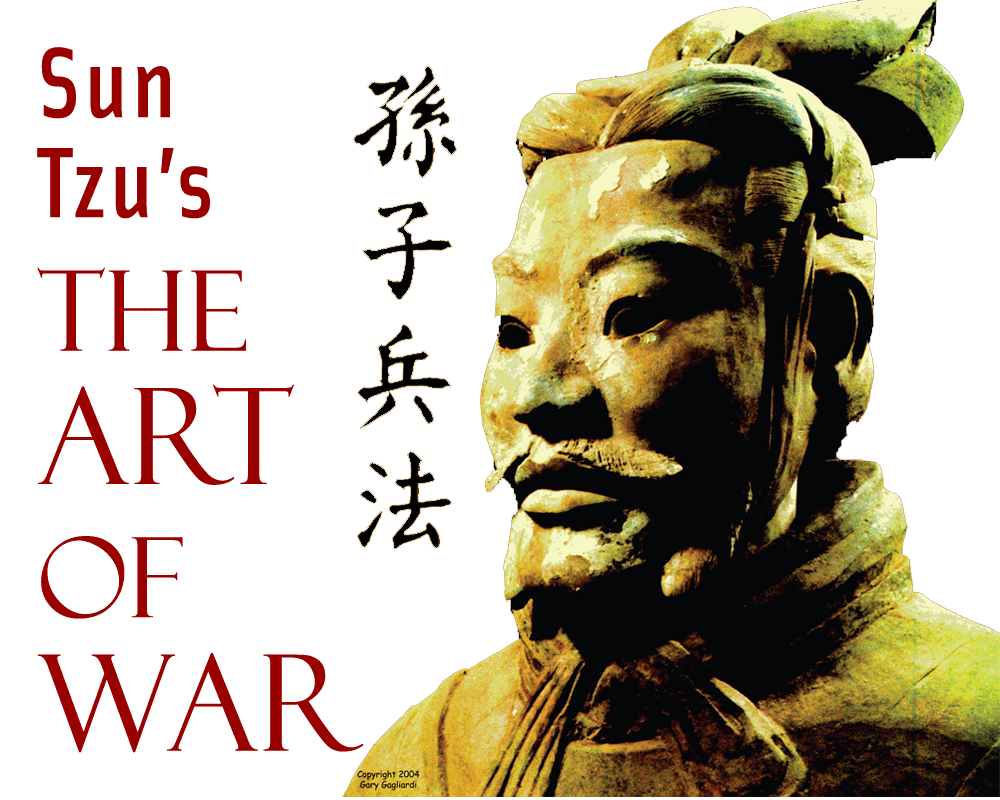

ომის ხელოვნება (ჩინურად: 孫子兵法; იკითხება: სუნ ძუ ბინ ფა; პირდაპირი მნიშვნელობა: სუნ ძის სამხედრო სტრატეგია) — ჩინური სამხედრო მოძღვრება, დაწერილი ძვ. წ. VI საუკუნეში სუნ ძის მიერ. შედგება 13 თავისაგან და თითოეული მათგანი ეთმობა ომის წარმოების თითო ასპექტს. დიდი ხნის განმავლობაში ითვლებოდა სამხედრო ტაქტიკისა და სტრატეგიების სრულყოფილ სწავლებად. ეს ერთ-ერთი ყველაზე განთქმული სტრატეგიული ნამუშევარია და მან დიდი წვლილი შეიტანა, როგორც სამხედრო დაგეგმარებაზე, ასევე მის გარეთაც. პირველად ითარგმნა ფრანგი მისიონერის მიერ დაახლოებით ორასი წლის წინ და, როგორც ცნობილია, მას დიდი ზეგავლენა მოუხდენია ნაპოლეონზე, გერმანიის გენშტაბზე მეორე მსოფლიო ომში და ასევე სპარსეთის ყურეში "ოპერაცია უდაბნოს შტორმი" დაგეგმვაზე
მრავალ აღმოსავლეთ აზიურ ქვეყანაში "ომის ხელოვნება" სამხედრო სამსახურის გამოცდისთვის პოტენციურ კანდიდატთათვის სილაბუსის ნაწილი იყო. ის ასევე გამოყენებული იყო ზოგიერთი ევროპული ქვეყნის სამხედრო ინსტიტუტების მიერ, მაგ. გერმანიაში პირველ მსოფლიო ომამდე. აშშ საზღვაო ძალებში ის სადაზვერვო პერსონალისთვის აუცილებელ საკითხავ ხოლო დანარჩენ სამხედრო მეზღვაურთათვის კი რეკომენდებულ წიგნად ითვლება.
ზოგიერთის წარმოდგენით "ომის ხელოვნებას" მხოლოდ სამხედრო გამოყენება არ აქვს. წიგნში მოცემული ტექსტის უმეტესობა არის იმაზე თუ როგორ ვაწარმოოთ ომი ბრძოლის გარეშე. ის იძლევა რჩევებს როგორ დავამარცხოთ ოპონენტი ისე, რომ ფიზიკური შერკინების საჭიროება არ შეიქმნეს. თანამედროვე კორპორაციულ კულტურაში ის ისწავლება "ოფისის პოლიტიკისთვის" მოსამზადებლად და ეს წიგნი დასავლეთის ქვეყნების მაღაზიებში ძირითადად ბიზნესის განყოფილებებში იყიდება. ზოგიერთ სპორტში, როგორიცაა რაგბი, ეს წიგნი თამაშის სტრატეგიის დასამუშავებლად იქნა გამოყენებული. იაპონურ კომპანიათა უმრავლესობისთვის "ომის ხელოვნება" აუცილებელ წიგნთა შორისაა უმაღლესი რანგის მმართველებისათვის. ბოლო ხანებში ის მზარდი პოპულარობით სარგებლობს ასევე დასავლურ ბიზნეს წრეებშიც, როგორც დამხმარე იდეოლოგია მძაფრი კონკურენციის პირობებში წარმატების მისაღწევად.
